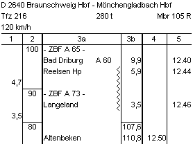

Sie haben jetzt den Bahnhof Bad Driburg verlassen und sollten die zulässigen 100 km/h anstreben, um pünktlich zu bleiben. Der Fahrplan zeigt die nächste Betriebsstelle Reelsen in km 5,9.
Die aktuellen Streckenkilometer sehen Sie am Streckenrand auf weißen Tafel.
Bis Reelsen ist nichts besonderes zu beachten.
